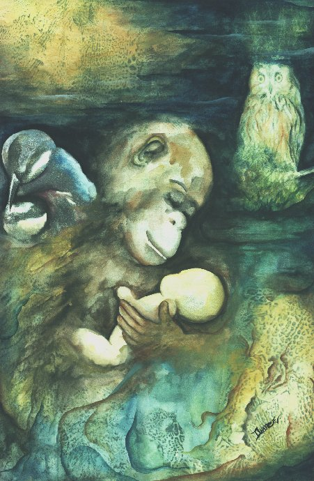

"Frágil Humanidade"
Dianez Barreto
Aquarela (33 x 50)
Acervo CEPEN
A sensibilidade de Dianez
Barreto às questões vitais, nos traz nesta obra
o emparelhar de instintos básico
à que somos servidos em comum com outras espécies,
as peles de onças, topos
de cadeia alimentar, berços que a humanidade escalpa em sua ação
direta ou não;
o aconchego carinhoso das aves
numa comunhão dos gametas da vida;
e a sapiente natureza personificada
na coruja, que de seu alto a tudo observa.
A luz solar penetra neste ambiente
filtrada por renda de peles. Sombras maculadas permeiam os espaços,
e nos dão a perceber
que o castelo humano pode não ter a solidez da pedra.